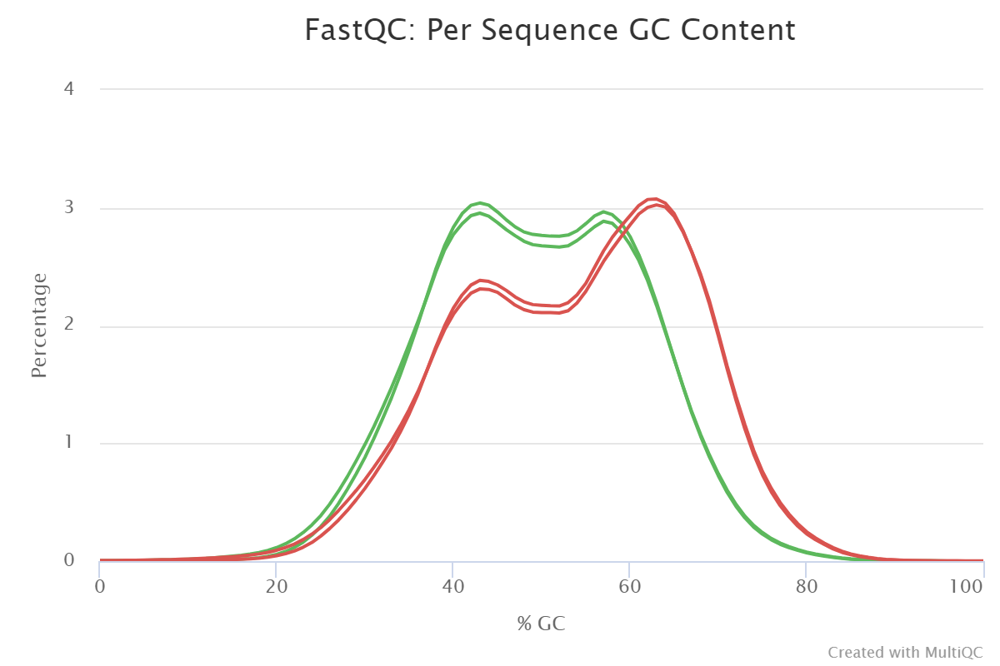
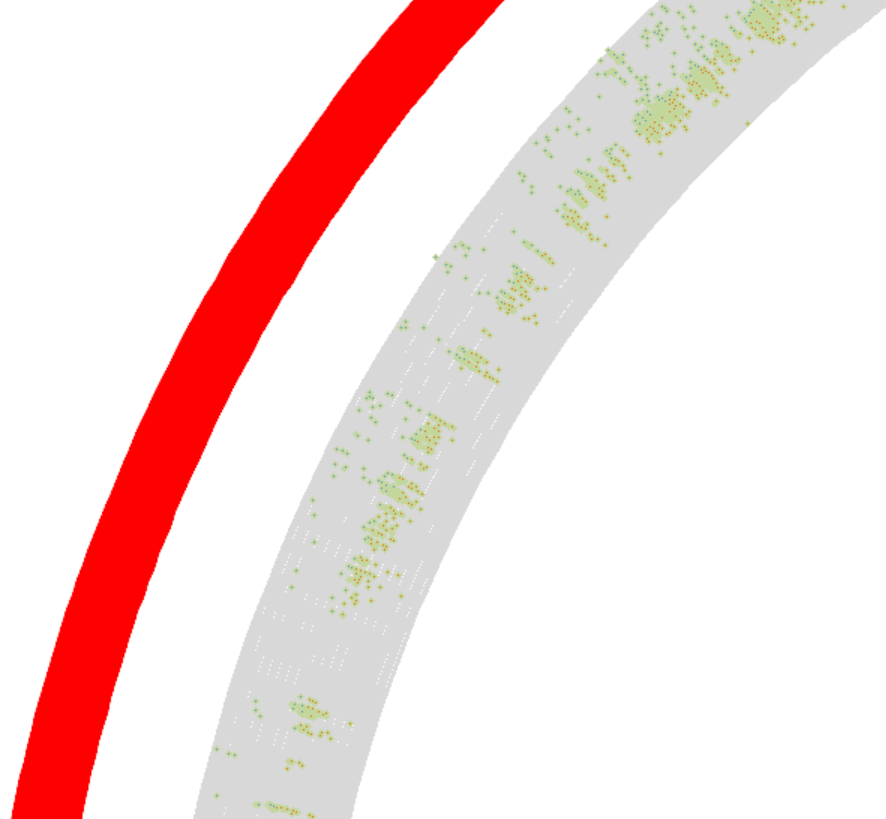

Human Copy Number Variations (hCNVs) are the result of structural genomic rearrangements that result in the duplication or deletion of DNA segments. These changes contribute significantly to human genetic variability, diseases, and somatic genome variations in cancer and other diseases Nam et al. 2015. hCNVs can be routinely investigated by genomic hybridisation and sequencing technologies
. There is a range of software tools that can be used to identify and quantify hCNVs. Unfortunately, locating hCNVs is still a challenge in standardising formats for data representation and exchange. Furthermore, the sensitivity, specificity, reproducibility, and reusability of hCNV detection and analysis research software varies. As a result, there is a need for the adoption of community-developed standards for data discovery and exchange. To address that ELIXIR developed Beacon protocol and for Genomics and Health standards, as well as mechanisms for annotating, benchmarking, creating reproducible and sharable tools and workflows, such as WorkflowHub, Galaxy, and ELIXIR, and, most importantly, accessible training resources and infrastructure.
This tutorial is a modification of a Galaxy Training Network tutorial Somatic variant calling tutorial to provide training on how to preprocess, identify and visualise hCNV regions using Control-FreeC tool using tumor/normal samples pairs.
First, start with uploading and preparing the input data to analyze. The sequencing reads used in this analysis are from real-world data from a cancer patient’s tumor and normal tissue samples. For the sake of an acceptable speed of the analysis, the original data has been downsampled though to include only the reads from human chromosomes 5, 12 and 17.
Name
Format
Origin
Encoding
Sequence length
Total Sequences
Chromosome
Data size (MB)
SLGFSK-N_231335_r1_chr5_12_17
fastq
Normal tissue
Sanger / Illumina 1.9
101
10602766
5, 12 and 7
530.4 MB
SLGFSK-N_231335_r2_chr5_12_17
fastq
Normal tissue
Sanger / Illumina 1.9
101
10602766
5, 12 and 7
582.0 MB
SLGFSK-T_231336_r1_chr5_12_17
fastq
Cancer tissue
Sanger / Illumina 1.9
101
16293448
5, 12 and 7
811.3 MB
SLGFSK-T_231336_r2_chr5_12_17
fastq
Cancer tissue
Sanger / Illumina 1.9
101
16293448
5, 12 and 7
868.7 MB
Get data
Hands-on: Data upload
For this tutorial, make a new history.
To create a new history simply click the new-history icon at the top of the history panel:
Click on galaxy-pencil (Edit) next to the history name (which by default is “Unnamed history”)
Type the new name
Click on Save
To cancel renaming, click the galaxy-undo “Cancel” button
If you do not have the galaxy-pencil (Edit) next to the history name (which can be the case if you are using an older version of Galaxy) do the following:
Click on Unnamed history (or the current name of the history) (Click to rename history) at the top of your history panel
This will download four sequenced files ordered as:
The first two files are for the forward and the reverse reads for the sample normal
tissue sequence.
The other two belong to the tumor reads.
In some cases the same dataset can be found in the Galaxy shared data library.
Ask the instructor for more details about this.
The dat aset can also be downloaded a local storage.
Copy the link location
Click galaxy-uploadUpload Data at the top of the tool panel
Select galaxy-wf-editPaste/Fetch Data
Paste the link(s) into the text field
Change Type (set all): from “Auto-detect” to fastqsanger.gz
Press Start
Close the window
As an alternative to uploading the data from a URL or your computer, the files may also have been made available from a shared data library:
Go into Data (top panel) then Data libraries
Navigate to the correct folder as indicated by your instructor.
On most Galaxies tutorial data will be provided in a folder named GTN - Material –> Topic Name -> Tutorial Name.
Select the desired files
Click on Add to Historygalaxy-dropdown near the top and select as Datasets from the dropdown menu
In the pop-up window, choose
“Select history”: the history you want to import the data to (or create a new one)
Click on Import
Make sure to upload the sequences in fastaq format. Look at the history and
check if the created datasets have their data types assigned correctly with two reads for
the tumor tissues and two reads for the normal tissues. If not, fix any
missing or wrong data type assignments.
Click on the galaxy-pencilpencil icon for the dataset to edit its attributes
In the central panel, click galaxy-chart-select-dataDatatypes tab on the top
In the galaxy-chart-select-dataAssign Datatype, select fastqsanger.gz from “New type” dropdown
Tip: you can start typing the datatype into the field to filter the dropdown menu
Click the Save button
Give the data meaningful names and tags to facilitate analysis.
When uploading data from a link, Galaxy names the files after the link address.
It might be useful to change or modify the name to something more meaningful.
Click on the galaxy-pencilpencil icon for the dataset to edit its attributes
In the central panel, change the Name field
Click the Save button
This tutorial has a set of shared steps performed on the data. To track the
data in the history, it is recommended to tag the datasets by attaching a meaningful tag ‘#’
to them. The tagging will automatically be attached to any file generated
from the original tagged dataset.
e.g., #normal for normal tissue datasets (with -N_ in the name) and
e.g., #tumor for tumor dataset (with -T_ in the name).
Datasets can be tagged. This simplifies the tracking of datasets across the Galaxy interface. Tags can contain any combination of letters or numbers but cannot contain spaces.
To tag a dataset:
Click on the dataset to expand it
Click on Add Tagsgalaxy-tags
Add tag text. Tags starting with # will be automatically propagated to the outputs of tools using this dataset (see below).
Press Enter
Check that the tag appears below the dataset name
Tags beginning with # are special!
They are called Name tags. The unique feature of these tags is that they propagate: if a dataset is labelled with a name tag, all derivatives (children) of this dataset will automatically inherit this tag (see below). The figure below explains why this is so useful. Consider the following analysis (numbers in parenthesis correspond to dataset numbers in the figure below):
a set of forward and reverse reads (datasets 1 and 2) is mapped against a reference using Bowtie2 generating dataset 3;
dataset 3 is used to calculate read coverage using BedTools Genome Coverageseparately for + and - strands. This generates two datasets (4 and 5 for plus and minus, respectively);
datasets 4 and 5 are used as inputs to Macs2 broadCall datasets generating datasets 6 and 8;
datasets 6 and 8 are intersected with coordinates of genes (dataset 9) using BedTools Intersect generating datasets 10 and 11.
Now consider that this analysis is done without name tags. This is shown on the left side of the figure. It is hard to trace which datasets contain “plus” data versus “minus” data. For example, does dataset 10 contain “plus” data or “minus” data? Probably “minus” but are you sure? In the case of a small history like the one shown here, it is possible to trace this manually but as the size of a history grows it will become very challenging.
The right side of the figure shows exactly the same analysis, but using name tags. When the analysis was conducted datasets 4 and 5 were tagged with #plus and #minus, respectively. When they were used as inputs to Macs2 resulting datasets 6 and 8 automatically inherited them and so on… As a result it is straightforward to trace both branches (plus and minus) of this analysis.
The data was obtained following a series of laboratory procedures, including DNA preparation, extraction, and sequencing, which means there is a possibility of errors occurring during those steps, which could affect data quality. To address that, it is necessary to test the quality of the fastq reads. The data quality needs to be within an acceptable range before looking for hCNVs. The low-quality data can lead us to false results. To detect low-quality data, preprocessing step is required to trim or discard the low-quality reads before proceeding with the mapping and hCNV detection steps.
Comment: More on quality control and mapping
To read more about quality control this is tutorial on Galaxy training network
Quality Control
For mapping Mapping
Quality Control
Hands-on: Quality control of the input datasets
Run FastQC ( Galaxy version 0.72+galaxy1) on the fastq datasets
param-files“Short read data from the current history”: all 4 FASTQ datasets selected with Multiple datasets
Click on param-filesMultiple datasets
Select several files by keeping the Ctrl (or COMMAND) key pressed and clicking on the files of interest
This job will generate eight new datasets to the history. To
parse the quality results view the html report of each dataset.
For the next step use the raw data fidings from FastQC.
Use MultiQC ( Galaxy version 1.8+galaxy0) to aggregate the raw FastQC data of all four input datasets into one report
In “Results”
“Which tool was used generate logs?”: FastQC
In “FastQC output”
“Type of FastQC output?”: Raw data
param-files“FastQC output”: all four RawData
outputs of FastQCtool)
Inspect the Webpage output produced by the tool
Question
What do you feel about the sequence’s overall quality?
Figure 1: Sequence quality per base generated by FastQC before end trimming.Open image in new tab
Figure 2: Sequence quality per Sequence GC content generated by FastQC before end trimming.
The forwards and reversed reads show good
quality, , with no major issues discovered
discovered during the preparation process..
TThe GC content plots for the samples’ forward and reverse reads
show an unusual bimodal distribution.
The unnormal distribution of the GC content of reads from a sample is
usually interpreted as a sign of possible contamination.
However, we are dealing with sequencing data from captured exomes,
which means that the reads do not represent random sequences from a genome.
They rather represent an arbitrary selection. Indeed, the samples were
prepared using Agilent’s SureSelect V5 technology for exome enrichment,
and bimodal GC content distributions have been identified as a hallmark
of that capture method
for example, see Fig. 4C in
Meienberg et al. 2015.
Read trimming and filtering
As previously demonstrated, The data have relatively high-quality sequenced reads.
However, the aim is to detect clear reads for hCNVs and will use a trimming step to see if the analysis can be improved.
Hands-on: Read trimming and filtering of the normal tissue reads
Run Trimmomatic ( Galaxy version 0.36.5) to trim and filter the normal tissue reads
“Single-end or paired-end reads?”: Paired-end (two separate
input files)
This makes the tool treat the forward and reverse reads simultaneously.
param-file“Input FASTQ file (R1/first of pair)”: the forward reads (r1) dataset of the normal tissue sample
param-file“Input FASTQ file (R2/second of pair)”: the reverse reads (r2) dataset of the normal tissue sample
“Perform initial ILLUMINACLIP step?”: Yes
“Select standard adapter sequences or provide custom?”: Standard
“Adapter sequences to use”: TruSeq3 (paired-ended, for MiSeq and HiSeq)
“Maximum mismatch count which will still allow a full match to be performed”: 2
“How accurate the match between the two ‘adapter ligated’ reads must be for PE palindrome read alignment”: 30
“How accurate the match between any adapter etc. sequence must be against a read”: 10
“Minimum length of adapter that needs to be detected (PE specific/ palindrome mode)”: 8
“Always keep both reads (PE specific/palindrome mode)?”: Yes
These parameters are used to cut ILLUMINA-specific adapter sequences
from the reads.
“Trimmomatic Operation”
“Select Trimmomatic operation to perform”: Cut the specified number of bases from the start of the read (HEADCROP)
“Number of bases to remove from the start of the read”: 3
param-repeat “Insert Trimmomatic Operation”*
“Select Trimmomatic operation to perform”: Cut bases off the end of a read, if below a threshold quality (TRAILING)
“Minimum quality required to keep a base”: 10
param-repeat “Insert Trimmomatic Operation”*
“Select Trimmomatic operation to perform”: Drop reads below a
specified length (MINLEN)
“Minimum quality required to keep a base”: 25
This step will creates four files in the history. The sizes of those two files vary depending on the original data quality and trimming intensity. The first two files are for mated forward and reverse reads, respectively.
The other two are for unmated reads as a result of excessive trimming.
However, because of the high average data quality, there was no need to perform excessive trimming by selecting the previous three trimming conditions, so those files should be empty. Those files can be heden to keep the history cleaner.
Track whether the reads are paired or unpaired, and remember to include them in any tool to be used.
The reason is that there are some tools, such as read mappers,
that expect reads to be in a specific order and having unmapped reads can result in significant.
Hands-on: Read trimming and filtering of the tumor tissue reads
repeat the previous step for tumor tissue reads following the same steps as above.
Hands-on: Exercise: Quality control of the polished datasets
Use FastQC ( Galaxy version 0.72+galaxy1) and MultiQC ( Galaxy version 1.8+galaxy0) like before,
but using the four trimmed datasets produced by Trimmomatic as input.
Question
Is there any difference between the reads before and after the trimming?
Figure 3: Sequence quality per base generated by FastQC after end trimming. The x-axis on the grapgh is fore the read length and the The y-axis shows the quality scores. The higher the score the better the base call. The background of the graph divides the y axis into very good quality calls (green), calls of reasonable quality (orange), and calls of poor quality (red).Open image in new tab
Figure 4: Sequence quality per Sequence GC content generated by FastQC after end trimming the plot shows an unusually shaped distribution that could indicate a contaminated library or some other kinds of biased subset
The quality of the data is good, so
trimming them didn’t lead to dramatic changes. However,
we can point out that some of the adapters were removed.
Read Mapping
Hands-on: Read Mapping
Use Map with BWA-MEM ( Galaxy version 0.7.17.1) to map the reads from the normal tissue sample to the reference genome
“Will you select a reference genome from your history or use a built-in index?”: Use a built-in genome index
“Using reference genome”: Human: hg19 (or a similarly named option)
Comment: Using the imported `hg19` sequence
If you have imported the hg19 sequence as a fasta dataset into your
history instead:
“Will you select a reference genome from your history or use a
built-in index?”: Use a genome from history and build index
param-file“Use the following dataset as the reference sequence”: your imported hg19 fasta dataset.
“Single or Paired-end reads”: Paired
param-file“Select first set of reads”: the trimmed
forward reads (r1) dataset of the normal tissue sample; output of
Trimmomatictool
param-file“Select second set of reads”: the trimmed
reverse reads (r2) dataset of the normal tissue sample; output of
Trimmomatictool
“Set read groups information?”: Set read groups (SAM/BAM specification)
“Auto-assign”: No
“Read group identifier (ID)”: Not available.
“Auto-assign”: No
“Read group sample name (SM)”: Not available.
“Platform/technology used to produce the reads (PL)”: ILLUNINA
“Select analysis mode”: Simple illumina mode
Comment: More on read group identifiers and sample names
In general, we can choose our own ID and SM values, but the ID should
unambiguously identify the sequencing run that produced the reads,
while the SM value should identify the biological sample.
Use Map with BWA-MEM ( Galaxy version 0.7.17.1) to map the reads from the tumor tissue sample
“Will you select a reference genome from your history or use a built-in index?”: Use a built-in genome index
“Using reference genome”: Human: hg19 (or a similarly named option)
Adjust these settings as before in case of using imported reference
genome.
“Single or Paired-end reads”: Paired
param-file“Select first set of reads”: the trimmed
forward reads (r1) dataset of the tumor tissue sample; output of
Trimmomatictool
param-file“Select second set of reads”: the reverse
reads (r2) dataset of the tumor tissue sample; output of
Trimmomatictool
“Set read groups information?”: Set read groups (SAM/BAM specification)
“Auto-assign”: No
“Read group identifier (ID)”: Not available.
“Auto-assign”: No
“Read group sample name (SM)”: Not available.
“Platform/technology used to produce the reads (PL)”: ILLUNINA
“Select analysis mode”: Simple illumina mode
Name the created list as Mapping-lsit
Copy Number Variation detection (hCNV).
After the mapping step, the data are ready to the hCNV detection step. This tutorial focuses on the Control-FreeC tool as a method for hCNV identification:
Identifies variant alleles in tumor/normal pair samples.
Visualize the hCNV using the Circos tool.
Mapped reads filtering
The remaining data preprocessing until the Control-FreeC step is the same for Normal and Tumor reads. Create a data collection to include those two files.
Hands-on: Filtrate the mapped reads
Use Build list to creat a list from the maped reads of the normal tissue and tumor tissue
param-file“Dataset”: Insert dataset
“Input dataset”: The output of map with BWA-MEM for normal tissue
param-file“Dataset”: Insert dataset
“Input dataset”: The output of map with BWA-MEM for cancer tissue
Run Create text file ( Galaxy version 1.1.0) with the following parameters
“Characters to insert”: normal reads
“Specify the number of iterations by”: User defined number
“How many times?”: 1
param-repeat “Insert selection”*
“Characters to insert”: tumor reads
“Specify the number of iterations by”: User defined number
“How many times?”: 1
- This will create a text file with only two lines normal reads and tumor reads
Run Relabel identifiers with the following parameters
param-collection“Input Collection”: the creat a list from Build lsit tool.
“How should the new labels be specified?”: Using lines in a simple text file.
“New Identifiers”: The outcom from Create txt file tool
“Ensure strict mapping”: False
Make sure to use the same files order for the both of Build list tool and Creat text file.
It is essential to filtrate the reads before the mapping step.
It is also required to filtrate the reads after. The preprocessing step
works by filtrating the mapped reads by removing the low-quality regions
and the duplicated reads. This step is needed to reduce the running time
and in results interpretation.
Hands-on: Data filtration and Remove duplicates
Run Samtools view ( Galaxy version 1.9+galaxy3) with the following parameters
param-collection“SAM/BAM/CRAM dataset”: The outpot of Relabel identifiers dataset cpllection.
“What would you like to look at?”: A filtered/subsampled selection of reads
“Configure filters:”:
“Filter by quality”: 1
“Exclude reads with any of the following flags set”: Read is unmappedMate is unmapped
- Produce extra dataset with dropped reads?”: False
- “Output format”: BAM (-b)
- “Reference data”: No
Click on param-collectionDataset collection in front of the input parameter you want to supply the collection to.
Select the collection you want to use from the list
Run RmDup ( Galaxy version 2.0.1) with the following parameters
param-collection“BAM File”: The outpot of Samtools view
“Is this paired-end or single end data”: BAM is paired-end
“Treat as single-end”: False
Homogenize mapped reads
To detect hCNVs expression accurately. The reads must go through the lift alignment process. Lift Alignment works by shifting reads that contain indels to the left of a reference genome until they can not be shifted anymore. As a result, it will only extract reads with indels, with no false reads (reads that mismatch with the reference genome other than the indels).
Hands-on: Homogenize the positional distributed indels
Run BamLeftAlign ( Galaxy version 1.3.1) with the following parameters
“Choose the source for the reference genome”: Locally cached
param-collection“Select alignment file in BAM format”: The outpot of tool RmDup.
“Using reference genome”: hg19
“Maximum number of iterations”: 5
Run Samtools calmd ( Galaxy version 2.0.2) with the following parameters
param-collection“BAM file to recalculate”: The outpot of BamLeftAlign.
“Choose the source for the reference genome”: Use a built-in genome
“Using reference genome”: hg19
“Do you also want BAQ (Base Alignment Quality) scores to be calculated?”: No
“Additional options”: Advanced options
“Change identical bases to ‘=’“: False
“Coefficient to cap mapping quality of poorly mapped reads”: 50
After the Homogenizing step, it is now to extract the reads which hold indels from the mapped reads.
Filtrate indels
Hands-on: Filtrate the indels reads
Run Samtools view ( Galaxy version 1.9+galaxy3) with the following parameters
param-collection“BAM file to recalculate”: The outpot of Samtools CalMD.
“What would you like to look at?”: Just the input header (-H)
“What would you like to have reported?”: The header in ...
“Output format”: SAM
“Reference data”: No, see help (-output-fmt-option no_ref)
Run Select with the following parameters
param-collection“Select lines from”: The outpot of Samtools view.
“that”: Matching
“the pattern”: ^@SQ\tSN:(chr[0-9]+|chrM|chrX|chrY)\tLN:[0-9]+
“Keep header line”: False
Run Replace Text in entire line ( Galaxy version 1.1.2) with the following parameters:
param-collection“Select lines from”: The output of Select
This step will generate a data collection folder with two files inside. Change the datatype for the files inside it to BED format.
Click on the galaxy-pencilpencil icon for the dataset to edit its attributes
In the central panel, click galaxy-chart-select-dataDatatypes tab on the top
In the galaxy-chart-select-dataAssign Datatype, select your desired datatype from “New type” dropdown
Tip: you can start typing the datatype into the field to filter the dropdown menu
Click the Save button
Run Samtools view ( Galaxy version 1.9+galaxy3) with the following parameters
param-collection“SAM/BAM/CRAM data set”: The outpot of CalMD.
“What would you like to look at?”: A filtered/subsampled selection of reads
Configure filters
“Filter by quality”: 255
What would you like to have reported?”: Reads dropped during filtering and subsampling
Produce extra dataset with dropped reads?”: False
“Output format”: BAM (-b)
“Reference data”: No
Run Samtools view ( Galaxy version 1.9+galaxy3) with the following parameters
param-collection“SAM/BAM/CRAM data set”: The outpot of Samtools view.
“What would you like to look at?”: A filtered/subsampled selection of reads
“Configure filters”
“Filter by regions:”: Regions from BED file
param-collection“Filter by intervals in a bed file:”: The outpot of ` Replace Text` BED format.
“Filter by readgroup”: NO
“Filter by quality”: 1
Produce extra dataset with dropped reads?”: False
“Output format”: BAM (-b)
“Reference data”:No
Hands-on: Extract files form list
extract the files from the list to handel them separitly
Run Extract Dataset with the following parameters:
param-collection“Input List”: The outpot of Samtools view.
“How should a dataset be selected?”: Select by element identifier
“Element identifier:”: tumor reads
Run Extract Dataset with the following parameters:
param-collection“Input List”: The outpot of Samtools view.
“How should a dataset be selected?”: Select by element identifier
“Element identifier:”: normal reads
Control_FREEC for hCNV detection
The data are now ready to detect hCNV. Control-FREEC detects copy-number alterations and allelic imbalances (including loss of heterozygosity; LOH) by automatically computing, normalising, and segmenting copy number profile and beta allele frequency (BAF) profile, and then calling copy number alterations and LOH. Control-FREEC differentiates between somatic and germline variants. Based on those profiles. The control reads display the gene status for each segment.
Figure 5: 1. Control-FREEC calculates copy number and BAF profiles and detects regions of copy number gain/loss and LOH regions in chromosomes 5,12 17. Gains, losses and LOH are shown in red, blue and light blue, respectively.
Comment: More on control_FREEC and hCNVs detection
Control-freec works by:
Annotating genomic changes and heterozygosity loss in the sample dataset.
Distinguishes between germline and somatic variants by creating copy number profile and BAF profile.
Employs the information in those profiles to detect copy number changes in sample reads.
Question
Can you expect the essential factors that afflict hCNVs detection?
Coverage bias in reads
Changes in reading mobility and GC content may favour the duplication of specific reads over others.
Bias in reading alignment
Because normal cells have higher read coverage than allelic reads during alignment, they may be classified as noise findings.
Normal cell contamination
The presence of normal cells within tumour cells can have an impact on the construction of a tumour genome’s copy number profile.
Hands-on: Detection of copy-number changes
Import the BED file for the captured reagions from Zenodo:
“Degree of polynomial:”: control-read-count-based normalization, WES (1)
“Read Count (RC) correction for GC-content bias and low mappability:”: normalize the sample and the control RC using GC-content and then calculate the ratio "Sample RC/contol RC" (1)
“Minimal number of consecutive windows to call a CNA”: WES (3)
“Segmentation of normalized profiles (break point)”: 1.2
“Desired behavior in the ambiguous regions”-1” “: make a separate fragment of this "unknown" region and do not assign any copy number to this region at all (4)
“Adjust sample contamination?”: True
“Sample contamination by normal cells”: 0.30000000000000004
“Intercept of polynomial”: with GC-content (1)
“Sample sex”: XX
“Choose the source for the reference genome”: Locally cached
“Reference genome”: hg19
“Outputs:”:
“BedGraph Output for UCSC genome browser”: False
“Visualize normalized copy number profile with predicted CNAs”: True
“2D data track file for Circos”: True
Question
In your opinion, what are the challenges in hCNVs detection?
The bias in Reads coverage changes in reads mobility and GC content can lead to
favouring the duplication of specific reads over others.
The bias in reads alignment.
Normal cells’ reads coverage is higher than the allelic reads, for
that the allelic reads some times expressed as noise findings
Contamination with normal cells
The availability of normal cells within tumor cells can
effect on the construction of the copy number profile of a
tumor genome
Visualise detected hCNVs
Cicros demonstrates the relationship and the positions of different objects with an appealing,
high quality and illustrative multilayers circular plot. Circos gives the user flexibility to
present the link between their data at a high rate by providing the ability to control the features
and elements in creating the plot. Circos visualise the genomic alterations in genome structure and
the relationships between the genomic intervals Krzywinski, Schein et al. 2009.
Hands-on: Visualise the hCNV findings
Run Circos ( Galaxy version 0.69.8+galaxy7) with the following parameters
“Reference Genome Source”: Custom Karyotype
param-file“Sample file”: The outpot of Output dataset out_chr_sorted_circos from control freec
“Ideogram:”:
Spacing Between Ideograms (in chromosome units)”: 3.0
“Radius”: 0.8
“Thickness”: 45.0
“Labels:”:
“Radius”: 0.01
“Label Font Size”: 40
“Cytogenic Bands:”:
“Band Stroke Color”: Black
“2D Data Tracks:”:
galaxy-wf-new “Insert 2D Data Plot”*
“Outside Radius”: 0.95
“Plot Type”: Scatter
param-file“Scatter Plot Data Source”: Output dataset 'out_ratio_log2_circos' from Control-FreeC
“Plot Format Specific Options:”:
“Glyph”: Circle
“Glyph Size”: 4
“Fill Color”: Gray
“Stroke Color”: Black
“Stroke Thickness”: 0
“Rules:”:
galaxy-wf-new“Insert Rule”:
galaxy-wf-new“Insert Conditions to Apply”
“Condition”: Based on value (ONLY for scatter/histogram/heatmap/line)
“Points above this value”: 0.0
galaxy-wf-new“Insert Actions to Apply”
“Action”: Change Fill Color for all points
“Fill Color”: Red
“Continue flow”: False
param-repeat“Insert Rule”:
galaxy-wf-new“Insert Conditions to Apply”:
“Condition”: Based on value (ONLY for scatter/histogram/heatmap/line)
“Points below this value”: 0.0
galaxy-wf-new“Insert Actions to ApplyInsert Actions to Apply”:
“Action”: Change Fill Color for all points
“Fill Color”: Blue
“Continue flow”: False
In“Axes:”:
galaxy-wf-new“Insert Conditions to Apply”
“Radial Position”: Absolute position (values match data values)
“Spacing”: 1.0
“y0”: -4.0
“y1”: 4.0
“Color”: Gray
“Color Transparency”: 1.0
“Thickness”: 2
“When to show”: Always
“Limits:”:
“Maximum number of links to draw”: 2500000
“Maximum number of points per track”: 2500000
Question
Can you interpret generated plot from the Circos tool?
Figure 6: This circos plot shows of genetic alterations in chromosomes 5,12 and 17 tutmer tissues. The outermost circle represents the targeted chromosomes and inner circle for deletion related and amplificated related variationsOpen image in new tab
Figure 7: Zoomed hCNV regions detected by Control_FREEC using Cicros
The outermost circle represents the targeted chromosomes.
The inner circle
shows the copy number changes in those regions.
The inner circle has two parts. The deletion-related variations are the red dots directed to the centre
(below the centre line), while the amplificated variations are the green dots pointed out of the center (toward chromosomes).
Conclusion
In this tutorial, we introduced Contol-FreeC as an alternative tool for detecting hCNVs and highlighted the steps for preparing reads and analysis.
You've Finished the Tutorial
Please also consider filling out the Feedback Form as well!
Key points
Follow best practices for read mapping, quality control and mapped reads postprocessing to minimize false-positive hCNVs.
Further information, including links to documentation and original publications, regarding the tools, analysis techniques and the interpretation of results described in this tutorial can be found here.
References
Meienberg, J., K. Zerjavic, I. Keller, M. Okoniewski, A. Patrignani et al., 2015 New insights into the performance of human whole-exome capture platforms. Nucleic Acids Research 43: e76–e76. 10.1093/nar/gkv216
Nam, J.-Y., N. K. D. Kim, S. C. Kim, J.-G. Joung, R. Xi et al., 2015 Evaluation of somatic copy number estimation tools for whole-exome sequencing data. Briefings in Bioinformatics 17: 185–192. 10.1093/bib/bbv055
Beacon, E. L. I. X. I. R. A Driver Project of the Global Alliance for Genomics and Health GA4GH and supported through ELIXIR. https://beacon-project.io/
ELIXIR The ELIXIR gateway to benchmarking communities, software monitoring, and quality metrics for life sciences tools and workflows. https://openebench.bsc.es/
WorkflowHub WorkflowHub is a registry for describing, sharing and publishing scientific computational workflows. https://workflowhub.eu/
Genomics, G. A. for, and Health GA4GH Work Streams develop standards and tools that are founded on the Framework for Responsible Sharing of Genomic and Health-Related Data. Their work is designed to enable international genomic data sharing based on the specific needs of clinical and research Driver Projects — real-world genomic data initiatives sourced from around the globe. https://www.ga4gh.org/
Feedback
Did you use this material as an instructor? Feel free to give us feedback on how it went.
Did you use this material as a learner or student? Click the form below to leave feedback.
Hiltemann, Saskia, Rasche, Helena et al., 2023 Galaxy Training: A Powerful Framework for Teaching! PLOS Computational Biology 10.1371/journal.pcbi.1010752
Batut et al., 2018 Community-Driven Data Analysis Training for Biology Cell Systems 10.1016/j.cels.2018.05.012
@misc{variant-analysis-somatic-variant-discovery,
author = "Khaled Jum'ah and Katarzyna Kamieniecka and Wolfgang Maier and David Salgado and Krzysztof Poterlowicz",
title = "Somatic Variant Discovery from WES Data Using Control-FREEC (Galaxy Training Materials)",
year = "",
month = "",
day = ""
url = "\url{https://training.galaxyproject.org/training-material/topics/variant-analysis/tutorials/somatic-variant-discovery/tutorial.html}",
note = "[Online; accessed TODAY]"
}
@article{Hiltemann_2023,
doi = {10.1371/journal.pcbi.1010752},
url = {https://doi.org/10.1371%2Fjournal.pcbi.1010752},
year = 2023,
month = {jan},
publisher = {Public Library of Science ({PLoS})},
volume = {19},
number = {1},
pages = {e1010752},
author = {Saskia Hiltemann and Helena Rasche and Simon Gladman and Hans-Rudolf Hotz and Delphine Larivi{\`{e}}re and Daniel Blankenberg and Pratik D. Jagtap and Thomas Wollmann and Anthony Bretaudeau and Nadia Gou{\'{e}} and Timothy J. Griffin and Coline Royaux and Yvan Le Bras and Subina Mehta and Anna Syme and Frederik Coppens and Bert Droesbeke and Nicola Soranzo and Wendi Bacon and Fotis Psomopoulos and Crist{\'{o}}bal Gallardo-Alba and John Davis and Melanie Christine Föll and Matthias Fahrner and Maria A. Doyle and Beatriz Serrano-Solano and Anne Claire Fouilloux and Peter van Heusden and Wolfgang Maier and Dave Clements and Florian Heyl and Björn Grüning and B{\'{e}}r{\'{e}}nice Batut and},
editor = {Francis Ouellette},
title = {Galaxy Training: A powerful framework for teaching!},
journal = {PLoS Comput Biol} Computational Biology}
}
Funding
These individuals or organisations provided funding support for the development of this resource
Congratulations on successfully completing this tutorial!
You can use Ephemeris's shed-tools install command to install the tools used in this tutorial.
Questions:


Open image in new tab
Open image in new tab
Open image in new tab
 Open image in new tab
Open image in new tabOpen image in new tab